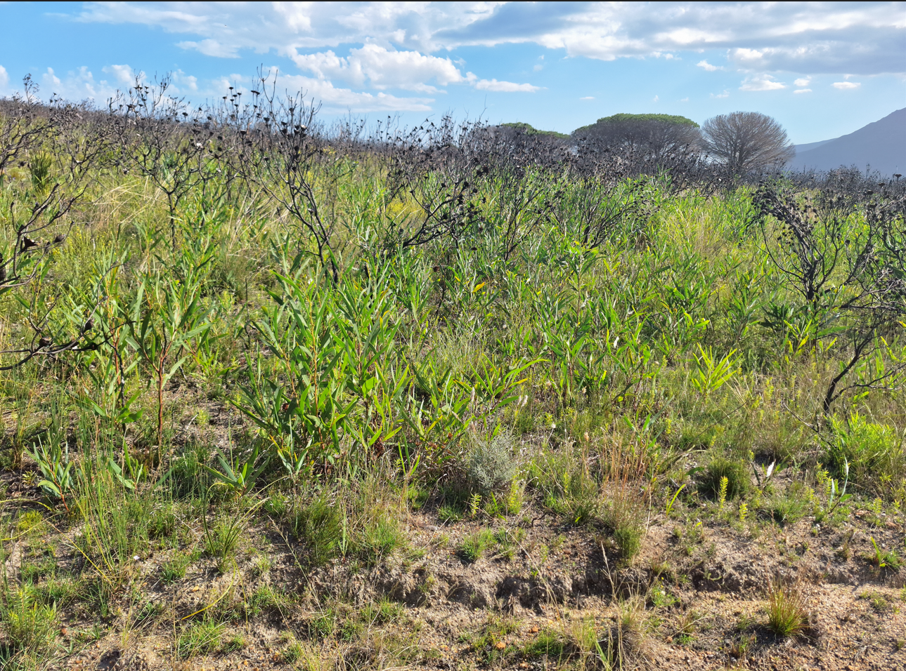

Fynbos
Stephni van der Merwe ![]()
Ecological Context
The Fynbos biome is the primary vegetation of the Cape Floristic Region (CFR), which is the smallest but relatively richest of the world’s six floral kingdoms. Characterised by its exceptional endemism and diversity, Fynbos occurs where there is a Mediterranean climate (predominantly winter rainfall, though some eastern areas receive year-round rain) and nutrient-poor soils.
Fynbos is a Mediterranean fire-dependent shrubland and restioland, distinguished by three main plant families’ groups: Proteaceae, Restionaceae, and Ericaceae. Ecosystem condition is inextricably linked to the appropriate fire return intervals, habitat loss, transformation, fragmentation, and the presence and abundance of key functional groups (Proteaceae, Restionaceae, and Ericaceae) and absence of competitive invasive alien plant species (Rebelo et al. 2006; Holmes et al. 2020).
Vegetation Units
Using the broader ecosystem groupings (bioregions), we structure analyses and interpretation around the following primary Fynbos ecosystem groups:
Sandstone Fynbos (Mountain Fynbos)
Occurring across the rugged mountain ranges of the Cape Fold Belt, this unit represents the largest remaining continuous tracts of Fynbos. It grows on acidic, nutrient-poor, sandy soils derived from sandstone and quartzite. Because the terrain is difficult to cultivate, it has largely escaped agricultural transformation but acts as a critical water catchment area.
Environment: Rugged terrain, steep slopes, and rocky outcrops. Rainfall varies drastically with topography.
Degradation indicators: Density of invasive alien trees (such as Pinus and Hakea species) and a lack of mature, slow-growing obligate reseeders (such as large Proteas) due to overly frequent fires.
Sand Fynbos
Found on the deep, acidic, wind-blown coastal sands of the West Coast and Agulhas plains. This low-elevation Fynbos is highly threatened, as the flat terrain has historically made it easy to convert to agriculture or urban development.
Environment: Flat to undulating coastal plains at low altitudes. Subject to strong coastal winds and dry, hot summers.
Degradation indicators: Habitat transformation and fragmentation, heavy invasion by Australian Acacias (e.g., Port Jackson and Rooikrans), which fix nitrogen and alter soil chemistry, making it difficult for native Fynbos to return even after clearing.
Limestone Fynbos
A unique and restricted vegetation type that occurs exclusively on calcareous (alkaline) marine deposits, primarily concentrated in the Agulhas Plain. It hosts highly specialized, endemic plant species adapted to high-pH soils, contrasting sharply with the acidic nature of typical Fynbos.
Environment: Gently undulating coastal plains and stabilized dunes with shallow soils over limestone bedrock.
Degradation indicators: Coastal development, localised agricultural expansion, and displacement by invasive alien plants.
Shale and Grassy Fynbos
Occurring on relatively more fertile, clay-rich soils derived from shale. Grassy Fynbos represents a transition zone toward the eastern parts of the biome where summer rainfall increases, allowing grasses to co-dominate with Fynbos shrubs in shallow soils.
Environment: Lower mountain slopes and rolling hills. Soils are more nutrient-rich than sandstone or sand fynbos.
Degradation indicators: Invasive alien plant density, fire return intervals
Key Pressures
While the main historical drivers of biodiversity loss include agricultural expansion (wheat, orchards, vineyards) and urban development, the remaining intact Fynbos faces a unique set of cascading pressures. The biggest threats to Fynbos condition are invasive alien plants, fire regime disruptions, and climate change (Midgley et al. 2002; Slingsby et al. 2017; Skowno et al. 2019). While biome-scale impacts of climate change on Fynbos have not yet been comprehensively assessed or mapped, it is firmly positioned as the third largest threat. This is justified by the extreme sensitivity of endemic Fynbos species to micro-climatic shifts (Midgley 2002). Increased temperatures and altered rainfall patterns (longer, more intense droughts) directly threaten species with narrow ranges, cause widespread mortality during extreme heat events, and critically compound the top two threats by accelerating invasive plant growth and increasing the frequency and intensity of wildfires (Slingsby et al.2017).
1. Invasive Alien Plants (IAPs)
This is the key threat to Fynbos. Woody invasives, particularly Pinus, Hakea, and Acacia species, competitively displace native flora. Furthermore, they drastically alter hydrology by absorbing significantly more water than native shrubs, reducing runoff into critical catchment dams, and they increase fuel loads, leading to unnaturally hot fires that damage the soil seed bank.

2. Fire Regime Disruptions
Fynbos is fire-dependant, but it must be the right kind of fire. Too frequent fires (e.g., every 2-5 years) kill slow-growing obligate reseeders before they can produce seeds, leading to local extinctions and structural collapse. Conversely, long-term fire exclusion leads to senescence (die-off) of the vegetation. Fires in the wrong season (e.g., winter or spring instead of late summer/autumn) also result in poor seed germination. Nutrient cycling in the nutrient-poor soils is dependent on fire, to return nutrients to the soil as ash.

3. Climate Change
Increasing temperatures and more frequent, severe droughts lead to direct physiological stress and die-back of native species (Slingsby et al. 2017). As mentioned above, it acts as a threat multiplier, exacerbating fire risks and shifting competitive advantages toward hardy invasive species.
Potential remote sensing approaches
| Pressure target | What to map | Approach | Already available |
|---|---|---|---|
| 1. Invasive Alien | |||
| Plants | Woody invasive | ||
| presence, density, and spread; post-clearing recovery. | Supervised |
3. Climate Change Impacts | Long-term browning trends; drought mortality; altered post-fire recovery rates. | Long-term vegetation index trends (NDVI/EVI). Monitoring the rate at which Fynbos greens up post-fire compared to historical baselines to detect drought-induced recovery failures. This must be paired with in field long-term vegetation surveys. | Base satellite archives (Landsat/MODIS time series). |
Using functional traits to predict vegetation state